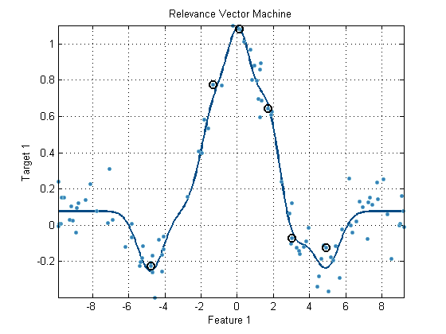
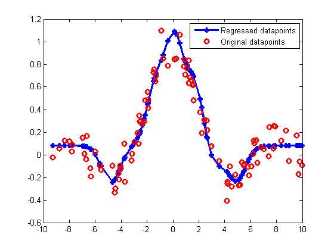

PRT Regresssion objects
Regression is another powerful technique available in the Pattern Recognition Toolbox. It is similar to classification, except that the target result is not a class label, but can be a non-integer value.
Since all prtRegress objects inherit from the prtAction class, they share the TRAIN, RUN, CROSSVALIDATE and KFOLDS For more information on these methods, refer to section on the prtEngine.
Contents
Using regression objects
The following is a simple example of the usage of a prtRegress object.
% Create a test and training dataset of a noisy Sinc wave. dsTest = prtDataGenNoisySinc; dsTrain = prtDataGenNoisySinc; % Create a prtRegressRvm object regress = prtRegressRvm; % Train the regression object regress = regress.train(dsTrain); % Plot the trained regression object plot(regress)
In the above plot, the training data points are all displayed at blue dots, and the learned regression curve is overlaid as a solid line.
To delve a little bit deeper, run the prtRegression object on the test dataset:
% Test it with the test dataset: result = regress.run(dsTest); % Plot the results plot(dsTest.getX, result.getX,'-*') % Overlay the original data points hold on plot(dsTest.getX, dsTest.getY,'ro') legend('Regressed datapoints', 'Original datapoints')
The above plot illustrates a few things. First, note that the results dataset, the regressed values are stored in observations, and the original targets from the test data set are copied over and stored in the targets of the result dataset.
In terms of a 2-d plot, you can think of the observations in the result dataset as the 'new' Y values, and the targets are the 'old' Y values. So, in order to plot in 2-d, you need the original X values, which are in dsTrain.getX, and plot those versus the regressed Y-values, which are stored in dsTrain.getX. For comparision purposes, the original Y-values, which are stored in both result.getY and dsTrain.getY, are also plotted.
The algorithm that maps the original Y values to the regressed values, varies depeding on the prtRegress object you use, however the syntax is the same for all prtRegress objects. For a list of all the different regression algorithms, and links to their individual help entries, A list of commonly used functions